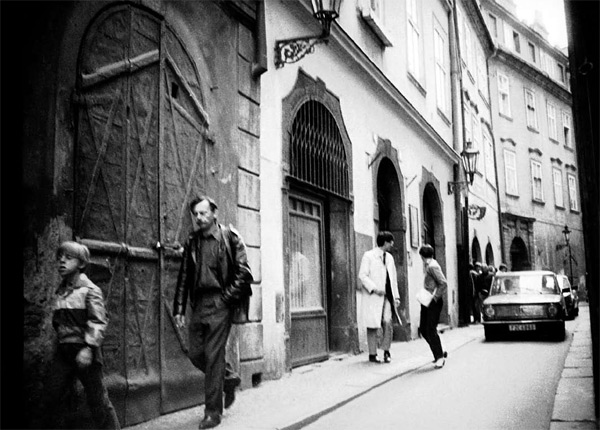
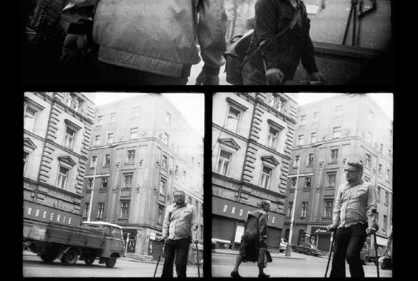
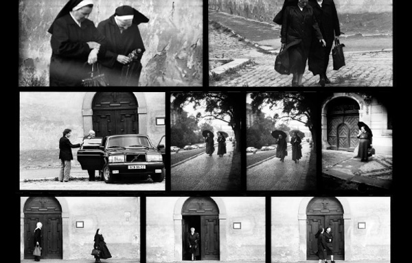
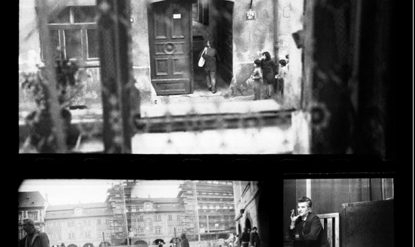
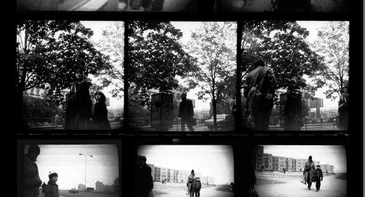

-
The Apparatus as Artist and Spectator
by Greg Afinogenov December 15, 2009
The introductory panel in the exhibition Prague through the Eyes of the Secret Police—a collection of photographs and filmstrips taken by Czech security officers as they carried out their surveillance work in the post-1968 period of hardline retrenchment—makes its anti-communist bonafides clear from the get-go. “A Camera in the Hands of a Sick State,” the first subheading blares, and its first paragraph takes up the theme: “The photographs presented in this exhibition were not created with any artistic intentions. They were taken by people who were not looking for artistic glory, but who were driven by their desire for power and their need to wield control over others. They were people who were morally twisted and wicked at heart.” Yet the text does not follow this remarkably frank aperçu by rejecting the photographs as artistic objects. On the contrary, it cites the twentieth-century influence of outsider art to suggest that it was precisely the “sickness” of the photographers that made them able to comment artistically on their sick society.
It is difficult, in looking at these images, not to wonder if the moralizing tone doesn’t in fact cloud the real issue. Certainly there seems to be nothing sick about any of the scenes—people walking, smoking, having conversations—that the text paints so insistently in pathological terms. Most of them, indeed, would not look out of place alongside the work of Henri Cartier-Bresson. Whatever pathologies may have subsisted between observer and observed, the camera doesn’t capture them.
If we glance at the that subheading in the original, we discover that it’s actually a pun: “Aparát v Rukou Nemocného Aparátu.” It is unnecessary to know Czech to recognize the word ‘aparát’ and grasp its connections to apparatus—and, more directly, to apparat, the universal, vague-yet-definite Communist-bloc designation for the machinery of government. It has (at least in Russian) a markedly different flavor from the English state. Where the latter evokes Hegel, abstract norms, and unified action, the former suggests Weber and Kafka, the paralyzing sprawl of a bureaucracy composed ultimately of individuals.
It is this aparát, then, that’s doing the observing. But who is being observed? The principal targets of surveillance are, of course, inevitably dissidents, foreign visitors, persons under suspicion. Yet they are almost never alone in the pictures: around them are unrelated passersby, cars, and, especially, the walls and windows of old medieval Prague itself. Almost all are oblivious to the camera’s presence and this lends them a deliberate and businesslike air; hands in their pockets, they carry on their lives with a kind of intensity—all the greater for being unselfconscious—that belies the supposed stasis of their sociopolitical surroundings. Even the buildings look like they have something to do.
And yet the odd camera angles remind us that the security officers are there too. Their equipment is concealed in baby carriages, briefcases, and engine compartments, the better to facilitate the surveillance of public places. What would they have looked like if the lens were pointed the other way? Would they be ominous men in dark suits, their “moral wickedness” on view, attempting unsuccessfully to blend in with the shadows of the street—or just a pair of eyes staring from the crack of a tinted car window? Perhaps. But one suspects that they would have resembled anyone on these streets, wearing the same preoccupied expressions and the same utilitarian clothes. It does not, in fact, seem impossible that one of the many passersby in these photographs would herself be a member of the secret police.
These images are not the traces of any standoff between state and society—or even, indeed, between aparát and society. If anything, they show the two as aspects of an indivisible whole, the business of society transitioning smoothly to the business of the police. Even if the dissidents sometimes stand out against this background—they alone look anxious or lost—the separation is incomplete, and it is often difficult to tell from any one image who the subject is supposed to be. Far from embodying moral freedom or independence, they are irresistibly drawn back into the pulse of socialist life. The aparát appears always to be in the process of observing itself, even as it tries to isolate its own discordant elements.
In his controversial new book Uncivil Society, the historian Stephen Kotkin has argued that we cannot understand the fall of communism in Eastern Europe as a parable of civil society rising up against the state. There was, as the title suggests, no such thing. Organized dissidence was almost always on too small a scale to matter, and when power fell into dissident hands they often did not know what to do with it. It was the elite’s loss of confidence that ultimately led to the collapse. In Everything Was Forever until It Was No More, the anthropologist Alexei Yurchak likewise denies the dissidents credit. Late Soviet culture, he argues, allowed and even encouraged groups and individuals to see themselves as living outside the “system” and its ideology—a kind of internal exile differentiated from that of the dissidents by its outright refusal to engage with ideological questions. This large-scale apolitical self-alienation eventually made the disappearance of the system entirely unsurprising.
In the context of these new interpretations of communism’s long autumn, can we really see the subjects of the photographs as paragons of “inner freedom,” as the introductory panel insists we do? That would be far too simplistic—for if there is something markedly alienated and independent about the dissidents, it is a quality shared also by the passersby. Their look of having somewhere to be—their businesslike appearance—implies also that that place isn’t here. The streets, courtyards, and parks in the background are never places to be properly inhabited or enjoyed; they are simply to be moved through, with determined step and without turning back. (“During her movement she displays amateur restraint,” one security officer reports of his subject. “This consisted of unfounded turning around to look behind her. She smoked a considerable amount while walking.”)
How much more must this have held true for the anonymous observers, hidden behind their disguises, walled off from their surroundings with their cameras. (Only one image preserves a tangible trace of this barrier: the lacy pattern of a curtain, the oblivious subject on one side, the policeman, standing upright before a window, on the other.) Their photographs are artifacts of exteriority, cataloguing it in all its forms—and they are also testaments to a peculiar kind of relationship between the artist, the spectator, and the world.
To a great extent, the world of these photographs, like the photographs themselves, is a creation (in that outsider-art kind of sense) of the aparát. Not the buildings, for they are, by and large, much older; and not the people, for they, like early Christians, are in the world without being of it; but the whole impersonal network of social relationships that sustains the Party and, by extension, the State; carving out the tracks along which the passersby are always so determinedly marching. There is, in other words, an inherent ambiguity here, which places this particular tentacle of the aparát in the peculiar position of being simultaneously artist and spectator. To speak of intent in this context would be beside the point; what is at issue is the contradiction between the intimate involvement of institutions in the shaping of the social world—their artistic immersion in it—and the distant, critical eye required for a successful surveillance operative. (The High Stalinist approach to the problem would undoubtedly have been a very different and perhaps a less contradictory one.) The late-communist cultivation of internal exile, not “inner freedom” or the “violation of individual rights,” furnishes these photographs with an entire way of looking at the world, and a set of insoluble problems along with it.
It is curious that, of the photographs in this exhibition, only one unequivocally shows someone’s awareness of the camera. The subject herself is staring off into the distance, advancing matter-of-factly through a park. Holding her hand, however, is a young girl, presumably her daughter, who walks more slowly and lags a little behind. Her gaze, calm and even, is focused straight on the unseen photographer. There is no fear in it, no judgment—only a hint of hesitation, as if she were about to ask a question that, dragged away by her mother, she will never have a chance to begin. It alone could have broken through the glass barrier of the lens; but what could it have possibly been?

{kind=link}
{kind=link}
{kind=link}
{kind=link}
{kind=link}